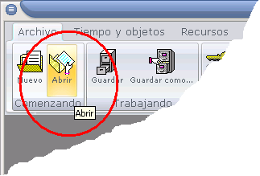
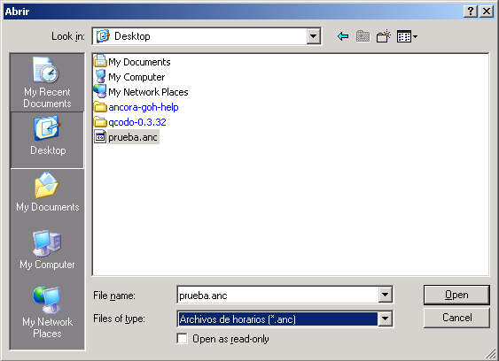

 |
1. Haga click en la ficha Archivo de la Cinta de Opciones. 2. Haga click en la opción Abrir. Aparecerá un cuadro de diálogo para buscar el archivo.  3. Seleccione el archivo y haga clic en Aceptar. Aparecerá el Explorador de horarios |